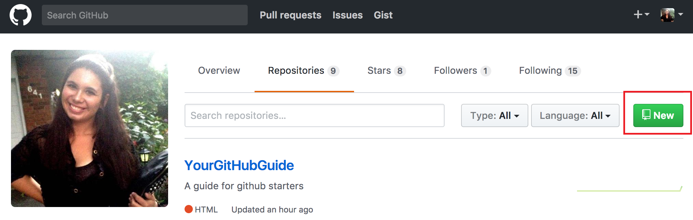
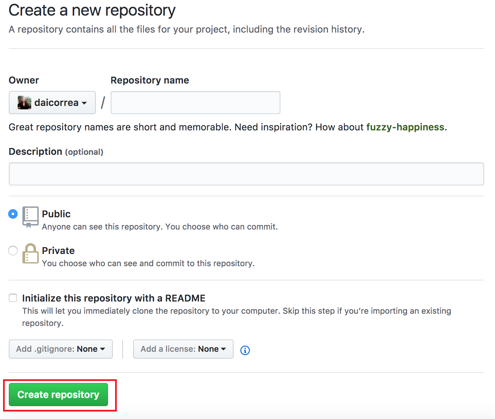

To create a new repository on Github, just go to the Repository tab and click the "New" button, as showed bellow.

Choose your repository's name, add a description to it, if you want to. Choose if it will be public or private and then click "Create Repository."

Once you've created it, you will see the instructions you need to follow to initialize your remote repository.

Initializing a repository:
Enter your project's directory by the command line, and use the git command bellow to initialize a repository on that folder.
Adding your files to track:
Once initialized, if you run the command "git status" you will see the status of all your project's content
- On branch CURRENT_BRANCH
- Changes not staged for commit:
- (use "git add FILE_NAME..." to update what will be committed)
- (use "git checkout -- FILE_NAME..." to discard changes in working directory)
-
- Untracked files:
- (use "git add FILE_NAME..." to include in what will be committed)
-
- img/img_1.png
- img/img_2.png
- img/img_3.png
- no changes added to commit (use "git add" and/or "git commit -a")
Now you will have to add all the files of your project's' directory to the git tracking.
You do that by running the command "git add" and specifying which files / folders you want to add.
In this case, we will use "git add ." to add everything that is on the current directory, since we are initializing our project on the remote, and want to push everything.
Running again the "git status" command will show us that all our files were added to the git tracking:
- On branch CURRENT_BRANCH
- Changes to be commited:
- (use "git reset HEAD FILE_NAME..." to unstage)
-
- modified: file_1.html
- new file: img_1.html
- modified: img_2.html
- modified: img_3.html
Commiting your changes:
Now that we have added all our project's content to the git tracking, let's commit our changes by running the command "git commit" with the "-m" option, which means we can add the commit message right after
$ git commit -m "My first commit"
Specifying a remote repository:
Now we already have a local git repository, with all our files added and commited. It's time to specify the remote repository we want to push it to.
We do that by running the command bellow and specifying the url of the remote repository we have created.
$ git remote add origin REMOTE_URL
You can use each HTTPS or SSH url (you can find those urls at your remote repository page, as we see at the "Creating a New Repository (on Github)" topic's image), feel free to choose
Pushing your modifications to the remote:
Finally, to complete our work we have to push the commited changes to the remote repository.
Just run the command "git push" with the option "-u" to add upstream (tracking) reference, and specifying the remote and the branch your want to push to (that, by default are called 'origin' and 'master', respectively).
$ git push -u origin master
Congrats! Your project is initialized, both local and remotely.